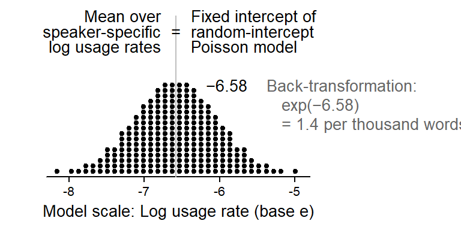

Frequency estimates based on random-intercept Poisson models
corpus linguistics
regression
clustered data
frequency data
negative binomial
Clustered count data can be modeled using a Poisson regression model including random intercepts. This blog post describes how this model represents the data and the different kinds of frequency estimates it produces.
When modeling frequency counts, the Poisson model is often inappropriate since the observed variation from text to text (or speaker to speaker) is greater than anticipated by this simple model. The observed overdispersion can be addressed using Poisson mixture models, which include an additional parameter that captures the variation among texts. A frequently used variant is the negative binomial model (also called a Poisson-gamma mixture model), which represents text-to-text variation using a gamma distribution. This blog post discusses another option, a random-effects Poisson regression model (also called a Poisson-lognormal mixture model). We look at the structure of this model and how it represents text-to-text variation, and draw comparisons with the negative binomial model. We will see that a Poisson random-intercept model yields two different types of average frequencies.
R setup
library(tidyverse) # for data wrangling and visualizationlibrary(dataverse) # for downloading data from TROLLinglibrary(marginaleffects) # to compute model-based estimateslibrary(MASS) # to fit a negative binomial regression modellibrary(kableExtra) # for drawing html tableslibrary(lme4) # to fit mixed-effects regression modelslibrary(lattice) # for data visualizationlibrary(gamlss) # for drawing gamma densities# pak::pak("lsoenning/uls") # install package "uls"library(uls) # for ggplot2 dotplot theme
Case study: Actually in the Spoken BNC2014
Our illustrative data records the distribution of actually in the Spoken BNC2014 (Love et al. 2017), which was analyzed in Sönning and Krug (2022). For more information on the dataset, please refer to Sönning and Krug (2021).
We start by downloading the data from TROLLing and rename a few variables for clarity.
In line with Sönning and Krug (2022), we remove speakers who contributed fewer than 100 words to the corpus, and for whom information on age and gender is missing.
d <- d |>filter( n_words >100,!(is.na(gender)))
In this blog post, we will concentrate on speakers between 19 and 29 years of age.
d <- d |>filter(age_group =="19-29") |>droplevels()
We add a new variable to the data frame: the speaker-specific normalized frequency of actually, expressed as ‘per thousand words’:
d$rate_ptw <- (d$n_actually / d$n_words) *1000
The data subset used in the present blog post includes 247 speakers and the following variables:
an ID (speaker)
the number of times they used actually (n_actually)
the age group (age_group)
self-reported gender (gender)
the total number of words contributed to the corpus by the speaker (n_words), and
the usage rate of actually, expressed as ‘per thousand words’ (rate_ptw)
The key interest in the following is in the usage rate of actually (expressed as a normalized frequency) among young British adults in conversational speech. In the following, the terms normalized frequency, occurrence rate, and usage rate will be used interchangeably.
Data description
We start by inspecting some key characteristics of the data. First we examine the distribution of speakers by Gender. The ratio of female and male speakers is 3 to 2:
table(d$gender)
Female Male
148 99
Next, we consider the distribution of word counts across speakers (i.e. the total number of word tokens each person contributed to the corpus). Figure 1 shows a very skewed profile, with a few speakers showing disproportionately high word counts.
Draw Figure
d |>ggplot(aes(x = n_words)) +geom_dotplot(binwidth =3000, stackratio = .9, method ="histodot") +theme_dotplot() +scale_x_continuous(labels = scales::label_comma(), expand =c(.01, .01)) +scale_y_continuous(expand =c(0, 0)) +annotate("text", x =200000, y = .5, label ="Each dot represents a speaker", color ="grey30", size =3) +xlab("Number of word tokens contributed to the corpus")
Figure 1: Distribution of word counts across speakers from the Spoken BNC2014 aged 19 to 29, excluding individuals who contribute fewer than 100 words to the corpus.
To see how the outcome variable is distributed at the speaker level, we draw a dot diagram of the speaker-specific usage rate of actually, expressed as “per thousand words”. Figure 2 shows a skewed arrangement, with a few individuals using the word at an exceptionally high rate.
Figure 2: Distribution of speaker-specific usage rates of actually in our data subset, per thousand words.
Negative binomial regression
For a point of reference, we start by fitting a negative binomial regression model. This model takes into account the speakers, and represents the observed variability in the usage rate of actually using a probability distribution. The model therefore includes an additional parameter that represents the variability of usage rates. As discussed in more detail in this blog post, this parameter controls the shape of a gamma distribution, which in turn describes the multiplicative variation in speaker-specific rates.
This is illustrated in Figure 3, which shows considerable variation among speakers. The vertical line marks a ratio of 1, which represents speakers whose usage rate coincides with the model-based average usage rate of actually (which , as we will see shortly, is 1.6 per thousand words). The density curve shows the distribution of speakers across multiplicative factors ranging from 0 to 3. A ratio of 0.5 represents a speaker whose usage rate of actually is only half as large as the overall average, and a ratio of 2 refers to speakers whose usage rate is twice as large as the overall average.
Figure 3: The gamma distribution describing between-speaker variability (in multiplicative terms) in the usage rate of actually.
Since this is a probability distribution, we can summarize the estimated distribution of speakers. The following code finds the quartiles of the distribution:
qGA(p =c(.25, .5, .75), mu =1, sigma =1/sqrt(3.4363)) |>round(2)
[1] 0.60 0.90 1.29
This tells us that ratios of 0.60 and 1.29 mark the interquartile range: The central 50% of the speakers are within this interval. Interestingly, and perhaps counterintuitively, the median of this gamma distribution is 0.90 (rather than 1), meaning that half of the speakers have a ratio below this mark. Let us also see how many speakers have ratio above and below 1:
pGA(q =1, mu =1, sigma =1/sqrt(3.4363)) |>round(2)
[1] 0.57
57% of the speakers have a ratio below 1, meaning that more than half of the speakers actually show a usage rate below the estimated mean. We will return to this rather puzzling feature of the negative binomial model further below.
We can fit a negative binomial model using the function glm.nb() in the {MASS} package (Venables and Ripley 2002):
Call:
MASS::glm.nb(formula = n_actually ~ 1 + offset(log(n_words)),
data = d, init.theta = 3.436299959, link = log)
Coefficients:
Estimate Std. Error z value Pr(>|z|)
(Intercept) -6.43610 0.04266 -150.9 <2e-16 ***
---
Signif. codes: 0 '***' 0.001 '**' 0.01 '*' 0.05 '.' 0.1 ' ' 1
(Dispersion parameter for Negative Binomial(3.4363) family taken to be 1)
Null deviance: 275.14 on 246 degrees of freedom
Residual deviance: 275.14 on 246 degrees of freedom
AIC: 1516.1
Number of Fisher Scoring iterations: 1
Theta: 3.436
Std. Err.: 0.462
2 x log-likelihood: -1512.118
The intercept of negative binomial model represents its estimate of the average frequency of actually:
coef(m_nb)
(Intercept)
-6.436104
We can back-transform it to the scale of normalized frequencies (per thousand words):
round(exp(coef(m_nb)) *1000, 2)
(Intercept)
1.6
We can also retrieve frequency estimates using the function avg_predictions() in the {marginaleffects} package (Arel-Bundock, Greifer, and Heiss 2024), which also returns a 95% confidence interval:
Another way of accounting for the structure in the data is to use a Poisson regression model with random intercepts on Speaker. This model is similar to the negative binomial since it also represents the observed variation among speakers using a probability distribution. Between-speaker variation is modeled on the scale of natural logarithms, using a normal distribution. On the scale of the actual occurrence rates, this translates into a log-normal distribution.
Model fitting
We will illustrate this once we have fit our model using the function glmer() in the R package {lme4}(Bates et al. 2015).
glmer(formula = n_actually ~ 1 + offset(log(n_words)) + (1 |
speaker), data = d, family = "poisson", control = glmerControl(optimizer = "bobyqa"))
coef.est coef.se
-6.58 0.04
Error terms:
Groups Name Std.Dev.
speaker (Intercept) 0.55
Residual 1.00
---
number of obs: 247, groups: speaker, 247
AIC = 1519.2, DIC = -1277.5
deviance = 118.9
Representation of between-speaker variation
The table tells us that the standard deviation of the random intercepts, i.e. the parameter describing the spread of the normal distribution representing between-speaker variation, is 0.55. Figure 4 shows the inferred distribution of speaker intercepts on the log scale. At the top of the figure, a second x-axis is drawn, which shows the normalized frequencies corresponding to these natural logs. The equidistant logs translate into a warped, non-linear spacing of the occurrence rates per thousand words.
Figure 4: The normal distribution describing between-speaker variability in the usage rate of actually on the scale of natural logarithms.
Figure 5 shows what this distribution looks like on the scale of normalized frequencies. Now the occurrence rates per thousand words are equidistant and the natural logs assume a non-linear spacing. The distribution we are looking at is a log-normal distribution, which consists of positive values only, and which is skewed toward large values.
Figure 5: The log-normal distribution describing between-speaker variability in the usage rate of actually on the normlized frequency scale.
To clarify the relation between normalized frequencies (the data scale) and natural logarithms (the model scale), let us consider a group of 250 hypothetical speakers. These speakers, and their individual average usage rates of actually, are generated in perfect accordance with the Poisson random-intercept model. Since the model operates on the log scale, each speaker is characterized by their log usage rate of actually.
Figure 6 shows that, according to the model, the speaker-specific log usage rates form a symmetric, bell-shaped pile, which resembles a normal distribution. The center of this pile of dots is the mean log usage rate in the sample of speakers. It is the mean over the 250 log rates.
draw figure
sample_speakers <-dnorm_to_dots(n_dots =250, mean =fixef(m_pr), sd = .55)p1 <-xyplot(1~1, type="n", xlim=c(-8.3, -4.8), ylim=c(0,2.2),par.settings=lattice_ls, axis=axis_bottom,scales=list(y=list(at=0), x=list(at=-9:-3)),ylab=NULL, xlab="Model scale: Log usage rate (base e)",panel=function(x,y,...){panel.segments(x0 =fixef(m_pr), x1 =fixef(m_pr), y0 =0, y1 =2.1, col ="grey")panel.dotdiagram(sample_speakers, scale_y = .07, n_bins =34)panel.text(x =fixef(m_pr)-.2, y =1.9, label="Mean over\nspeaker-specific\nlog usage rates", lineheight = .8, adj=1)panel.text(x =fixef(m_pr)+.2, y =1.9, label="Fixed intercept of\nrandom-intercept\nPoisson model", lineheight = .8, adj=0)panel.text(x =fixef(m_pr), y =1.9, label ="=")panel.text(x =fixef(m_pr)+.4, y =1.2, label="\u22126.58", adj=0)panel.text(x =fixef(m_pr)+1.2, y =1.2, label="Back-transformation:", adj=0, col ="grey40")panel.text(x =fixef(m_pr)+1.4, y = .95, label="exp(\u22126.58)", adj=0, col ="grey40")panel.text(x =fixef(m_pr)+1.4, y = .7, label="= 1.4 per thousand words", adj=0, col ="grey40") })print(p1, position =c(0,0,.69,1))

Figure 6: Dot diagram showing an idealized distribution of 250 speakers on the model scale (log normalized frequencies), based on the parameters of the Poisson random-intercept model.
In the Poisson random-intercept model, this mean log usage rate is represented by the fixed intercept of the model. We saw this fixed intercept in the regression table above. We can retrieve it from the model using the function fixef():
fixef(m_pr)
(Intercept)
-6.57786
To make sense of this value, we back-transform this log normalized frequency to the scale of occurrence rates via exponentiation. To get occurrences ‘per thousand words’, we multiply this rate by 1,000, and round the result to one decimal place:
round(exp(fixef(m_pr)) *1000,1)
(Intercept)
1.4
The mean log normalized frequency, then, which is represented by the fixed intercept of the model, corresponds to a rate of 1.4 per thousand words.
Two types of average frequencies
The normalized frequency of 1.4 per thousand words is one kind of average usage rate we can report based on a random-intercept Poisson model. To recognize that there is a second type of average normalized frequency, let us consider the distribution of the 250 speaker-specific usage rates on the data scale of normalized frequencies. Figure 7 shows that the pile is no longer symmetric – it is skewed toward the right, with a longer upper tail. Note how this dot diagram matches the density curve shown in Figure 5 above.
Figure 7: Dot diagram showing an idealized distribution of 250 speakers on the data scale (normalized frequencies), based on the parameters of the Poisson random-intercept model.
Characterizing the distribution of usage rates on this scale is more challenging due to the asymmetry. If we want to summarize the pile of dots by referring to the “typical”, or “average” occurrence rate in the group of speakers, we could use the mean or median usage rate. The mean is sensitive to outliers – the few speakers with unusually high usage rate will therefore pull it upwards slightly. The median, on the other hand, is the usage rate in the middle of the distribution and not affected by outliers – half the speakers are above, and half below the median rate.
If we calculate the mean usage rate based on the pile of dots in Figure 7, we obtain a normalized frequency of 1.6 per thousand words. This “average” is marked in Figure 7 using a black needle. For comparison, the back-transformed mean log usage rate of 1.4 per thousand words, which we calculated above, appears as a grey needle.
It is important to note that these two types of averages differ. Let us therefore repeat what they represent:
The grey average (1.4 ptw) is the mean over the speaker-specific log usage rates (see Figure 6), back-transformed into a normalized frequency.
The black average (1.6 ptw) is the mean over the speaker-specific usage rates (see Figure 7), i.e. over the back-transformed log usage rates.
The two averages represent two different measures of central tendency:
1.6 ptw, in black, is the mean usage rate over the 250 speakers.
1.4 ptw, in grey, is the median usage rate over the 250 speakers.
In other words, upon back-transforming the fixed intercept in a random-intercept Poisson regression model, we obtain the median normalized frequency.
If we look at Figure 7, we note that the median (grey) arguably does a better job at locating the typical occurrence rate in the group of 250 speakers – the mean (black) seems a bit too high, as most of the dots are below 1.6 ptw. This is consistent with the advice found in statistical textbooks: the median is often a better summary measure for skewed distributions.
Obtaining model-based estimates of the different average frequencies
Both kinds of average frequencies can be constructed based on a Poisson model with random-intercepts. We will look at two approaches: (i) an analytic approach based on the model parameters, and (ii) a predictive approach using the {marginaleffects} package.
As we saw above, the median normalized frequency is represented by the model intercept, and we can retrieve it as follows:
round(exp(fixef(m_pr)) *1000,2)
(Intercept)
1.39
The mean normalized frequency can be calculated based on the model intercept and the variance of the normal distribution describing between-speaker variation. This is the formula:
We can also obtain these two types of average frequency using the {marginaleffects} package. To get the median normalized frequency of actually (i.e. the back-transformed mean log rate), we run the following code. The argument re.form = NA tells the function to ignore between-speaker variation:
To get (something close to) the mean normalized frequencies we calculated above, we can ask the function avg_predictions() to average predictions over the speakers in the sample. This means that the by-speaker random intercepts are incorporated into the model predictions. The model-based speaker intercepts are used to get a predicted normalized frequency for each speaker, and these are then averaged.
The result is not identical to the one we got above due to shrinkage: The speaker intercepts are partially pooled, and their variability is therefore smaller than implied by the random-intercept standard deviation.
Comparison: Poisson random-intercept vs. negative binomial model
We can now compare the two types of regression models in terms of (i) how they represent between-speaker variation and (ii) the kind of frequency estimates they return.
The two models describe the variation among speakers using different probability distributions. These are compared in Figure 8, which shows that they provide quite similar, though not identical, representations of the distribution of speaker-specific normalized frequencies.
The negative binomial model uses the gamma distribution to express between-speaker variation; it is therefore also referred to as a Poisson-gamma mixture model.
Poisson regression with random intercepts uses the lognormal distribution to express between-speaker variation; it is therefore also referred to as a Poisson-lognormal mixture model.
draw figure
x_seq <-seq(0, .006, length =100)p1 <-xyplot(1~1, type="n", xlim=c(0, .006), ylim=c(0,1.1),par.settings=lattice_ls, axis=axis_L,scales=list(y=list(at=0), x=list(at=(0:6)/1000, label=c(0,1,2,3,4,5,6))),ylab="Density", xlab="Ocurrences per thousand words",panel=function(x,y,...){panel.segments(x0=1, x1=1, y0=0, y1=1.5, col=1)panel.points(x =seq(.01, 5, length=200)*exp(coef(m_nb)),y =dGA(seq(.01, 5, length=200), mu=1, sigma=1/sqrt(3.4363)),type="l", col ="grey40", lty ="32", lineend ="butt")panel.points(x = x_seq,y =dlnorm(x_seq, meanlog =fixef(m_pr), sdlog =0.55)/600,type="l")panel.segments(x0=0, x1=.006, y0=0, y1=0)panel.text(x =4, y = .2, label="Log-normal distribution", adj=0, cex=.9)panel.text(x =1.5, y = .45, label="Gamma distribution", adj=0, col ="grey50", cex=.9)panel.abline(v =1)panel.text(x = .0008, y =1.25, label ="Poisson-lognormal model\n(Poisson regression with random intercepts)", adj=0, cex=.9, lineheight = .8)panel.text(x = .0025, y = .6, label ="Poisson-gamma model\n(Negative binomial regression)", adj=0, cex=.9, col ="grey40", lineheight = .8) })print(p1, position =c(0,0,1,.85))cairo_pdf("actually_gamma_lognormal_comparison.pdf", width =4, height =2)print(p1, position =c(0,0,1,.85))dev.off()
png
2
Figure 8: The log-normal distribution (black) vs. the gamma distribution (grey) describing between-speaker variability in the usage rate of actually.
As for the model predictions, the intercepts in the two models represent different average frequencies:
The intercept in a negative binomial model represents the mean normalized frequency
The intercept in the Poisson random-intercept model represents the median normalized frequency
The following code therefore returns different frequency estimates:
round(exp(fixef(m_pr)) *1e3, 2)
(Intercept)
1.39
round(exp(coef(m_nb)) *1e3, 2)
(Intercept)
1.6
Summary
The Poisson regression model with random intercepts is a strategy for modeling clustered frequency data. This model captures text-to-text (or speaker-to-speaker) variation in the occurrence rate (i.e. normalized frequency) of interest using a lognormal distribution. It is therefore also referred to as a Poisson-lognormal mixture model. This model is capable of producing two types of frequency estimates: the median normalized frequency across texts, and the mean normalized frequency across texts. It is important to recognize the difference between these measures, as they represent alternative ways of expressing the typical (or “average”) occurrence rate in the population of interest. Further, it allows us to make sense of model-based predictions and how they may differ from those produced by other count regression models (such as the negative binomial model).
References
Arel-Bundock, Vincent, Noah Greifer, and Andrew Heiss. 2024. “How to Interpret Statistical Models Using marginaleffects for R and Python.”Journal of Statistical Software 111 (9): 1–32. https://doi.org/10.18637/jss.v111.i09.
Bates, Douglas, Martin Mächler, Ben Bolker, and Steve Walker. 2015. “Fitting Linear Mixed-Effects Models Using lme4.”Journal of Statistical Software 67 (1): 1–48. https://doi.org/10.18637/jss.v067.i01.
Love, Robbie, Claire Dembry, Andrew Hardie, Vaclav Brezina, and Tony McEnery. 2017. “The Spoken BNC2014: Designing and Building a Spoken Corpus of Everyday Conversations.”International Journal of Corpus Linguistics, 319–44. https://doi.org/10.1075/ijcl.22.3.02lov.
Sönning, Lukas, and Manfred Krug. 2021. “Actually in contemporary British speech: Data from the Spoken BNC corpora.” DataverseNO. https://doi.org/10.18710/A3SATC.
———. 2022. “Comparing Study Designs and down-Sampling Strategies in Corpus Analysis: The Importance of Speaker Metadata in the BNCs of 1994 and 2014.” In Data and Methods in Corpus Linguistics, edited by Ole Schützler and Julia Schlüter, 127–60. Cambridge University Press. https://doi.org/10.1017/9781108589314.006.
![]()